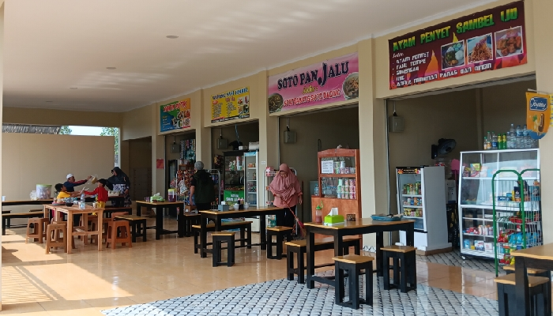

Resto Rs Bunda Asih
Resto Rs Bunda Asih
Resto Rs Bunda Asih
Resto Rs Bunda Asih
Resto RS Bunda Asih merupakan warung makan yang berdiri dengan tujuan menyediakan hidangan sehat, lezat, dan terjangkau bagi pengunjung rumah sakit, keluarga pasien, serta masyarakat sekitar. Berawal dari usaha kecil, kini berkembang menjadi tempat makan yang nyaman dengan berbagai pilihan menu.
Nikmati makanan langsung di tempat dengan suasana nyaman.
Layanan antar cepat dan aman ke lokasi Anda.
Pesan dan ambil makanan tanpa perlu menunggu lama.
Pesan menu melalui website dengan mudah dan cepat.
